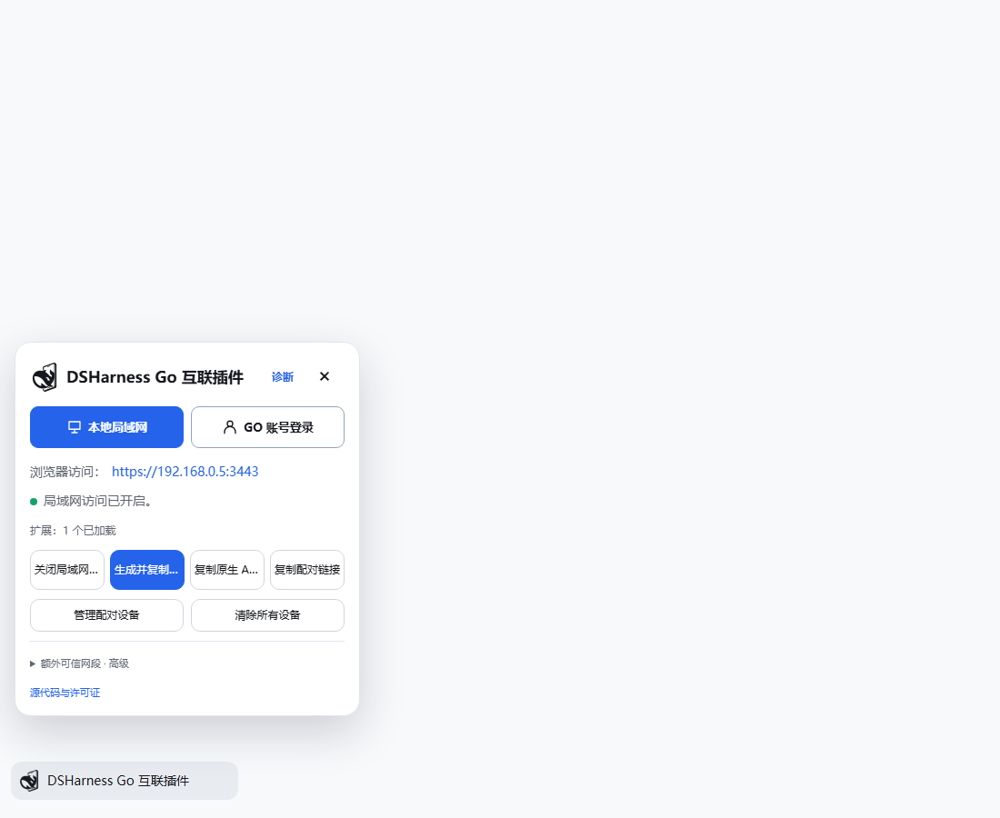
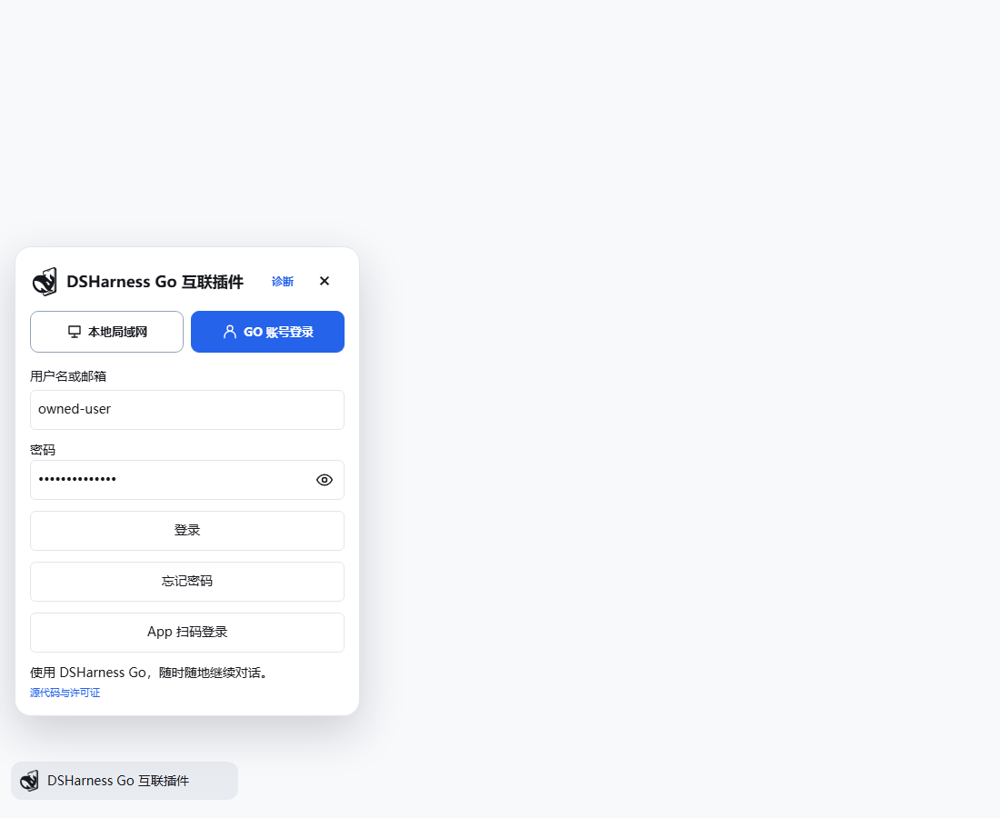

DSHARNESS GO / 电脑互联插件
你的工作区，
随手就能继续。
让 DSHarness Go 手机 App 连接电脑上的 DeepSeek Harness。局域网配对，或通过同账号远程连接，在手机上继续工作。
公开预览 · 0.6.4-desktop.13 · npm 已发布
一个入口，两种连接方式。
在身边，直接连。
出门后，同账号继续。
局域网使用 HTTPS 配对与设备授权。远程连接由手机和电脑登录同一账号，首次核对安全码并在电脑确认。电脑需保持运行、联网。
界面预览
从电脑侧栏开始。
以下为当前插件构建的隔离测试截图，账号与地址均为测试数据。


连接教程
三步，连接你的电脑。
- 01
安装并打开插件
安装完成后启用 DSH Go-workspace，在侧栏打开「DSHarness Go 互联插件」。Desktop 使用其插件页管理安装。
- 02
选择连接方式
同一网络选择「本地局域网」，开启访问并生成配对信息；远程连接先在「GO 账号登录」登录，手机使用同一已验证账号。
- 03
核对并授权
手机在「连接电脑」中发起连接。远程首次连接需核对安全码并由电脑允许；App 扫码登录需要手机确认，登录本身不授予远程访问权限。
账号与扫码功能需 App 和账号服务同时兼容。仅安装插件无法升级服务器或手机。
安装入口
准备好，就从这里开始。
已发布 npm 公共安装包。DSH Web 使用以下命令，或指定版本安装。Desktop 请在客户端插件页安装。
dsh plugin --profile web add dsh-go-workspacedsh plugin --profile web add dsh-go-workspace@0.6.4-desktop.13
帮助与更新
有问题，留下清晰的线索。
请提供 DSH、App、插件版本与复现步骤。可在公开仓库提交问题，也可先下载反馈模板。
连接失败时先检查什么？
确认插件启用、电脑在线且手机能到达所选地址。局域网检查网络隔离和防火墙；账号连接确认两端账号一致、邮箱已验证、远程连接已开启。可在插件「诊断」查看状态。
如何撤销手机授权？
在电脑插件设备管理中选择对应设备撤销。局域网配对与账号远程授权分别管理，操作前确认连接方式。
运行代码与许可证
公共安装包中的运行代码可以查看。插件保留 Apache-2.0 与 AGPL-3.0-only 许可；发布时需要提供相应源码。私有开发仓库保存的提交历史、独立服务器配置和部署资料分别管理。